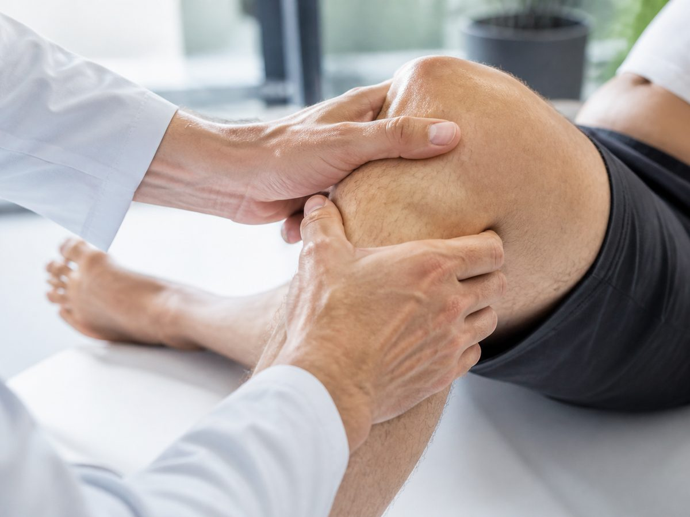
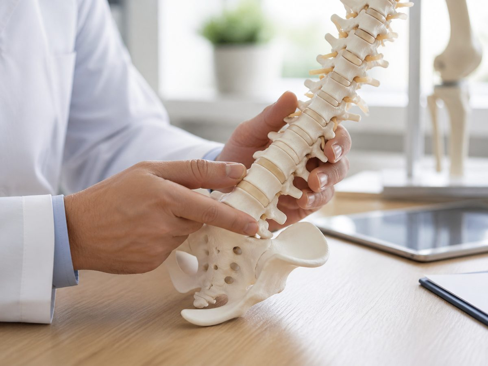
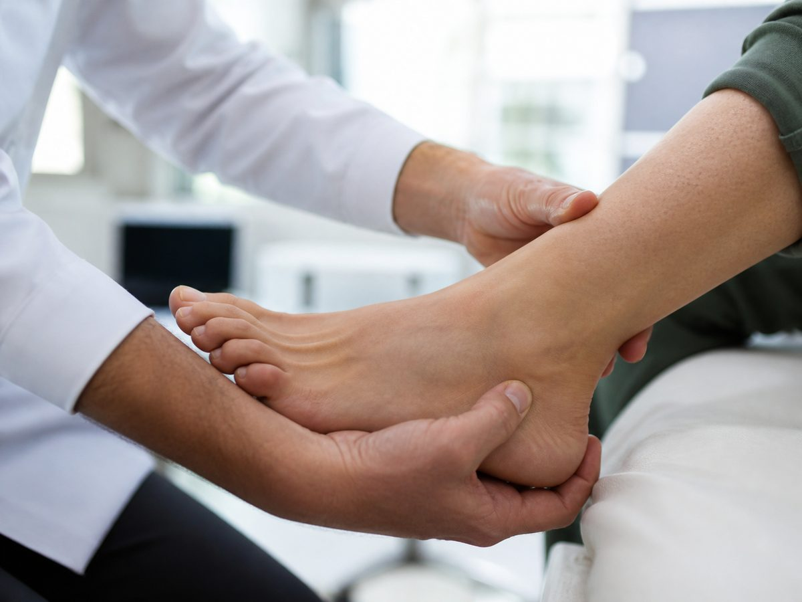

무릎 관절염
계단 내려갈 때 시큰거리고, 쪼그려 앉기 어려워졌다면 관절 연골과 주변 근육을 함께 확인해야 합니다.
퇴행성 관절염연골 손상활액막염

목부터 발목까지, 통증이 생긴 부위가 아니라 원인이 있는 곳을 치료합니다. 클리닉별로 진단과 치료 방향을 안내합니다.

01 — SPINE
허리 통증의 상당수는 디스크가 아니라 근육과 인대, 관절의 문제입니다. 영상에서 디스크가 보인다 해도 증상과 일치하는지 확인해야 합니다.
바른리더스는 신체 검진과 초음파, 필요 시 MRI를 함께 확인해 신경 압박의 위치를 좁힙니다. 신경 주사와 도수재활을 우선하고, 수술이 필요한 경우에는 정확한 근거를 가지고 안내합니다.
03 Knee & Foot
무릎 관절염은 단계에 따라 치료가 다릅니다. 초기에는 근력과 체중 관리, 중기에는 주사와 재활로 통증을 조절합니다.

계단 내려갈 때 시큰거리고, 쪼그려 앉기 어려워졌다면 관절 연골과 주변 근육을 함께 확인해야 합니다.

발목을 삐었거나 발바닥이 아픈 경우, 손목이 욱신거리는 경우에도 원인은 인대와 힘줄에 있습니다.
04 Self Check
해당되는 항목을 선택하면 권장 진료 시기를 안내해 드립니다. 1분이면 충분합니다.
ONLINE RESERVATION